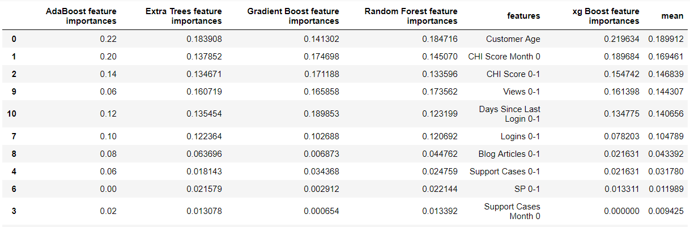
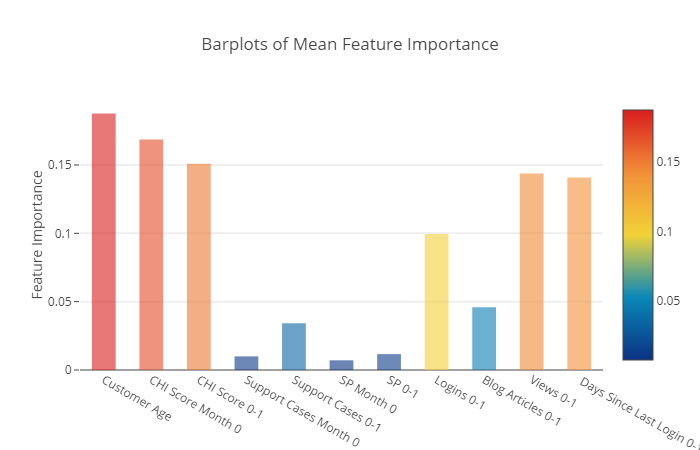
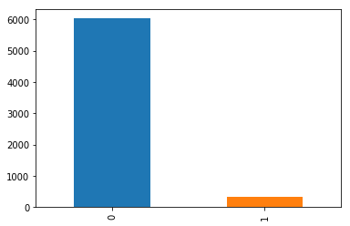
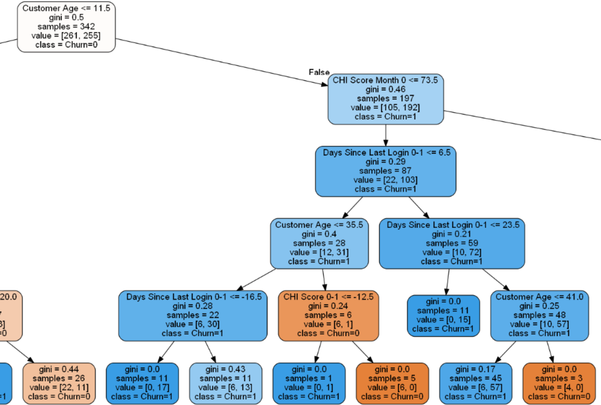
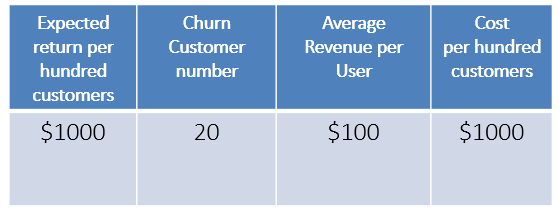

This report presents a recommended predictive model for identifying customer with the greatest risk of defaulting from QWE inc’s solution services over the next two months(after February 2012). This model also presented the top three drivers of churn for the identified customers. The model was built from a RandomForestClassifier using the following information to predict a customer’s likelihood to leave the company:
Customer age
CHI Score Month 0
Days Since Last Login 0-1
Q1 What are the two important predictors of customer churn


code for calculating and Visualizing feature importance
import seaborn as sns import matplotlib.pyplot as plt
# Classifier Libraries from sklearn.linear_model import LogisticRegression from sklearn.svm import SVC from sklearn.neighbors import KNeighborsClassifier from sklearn.tree import DecisionTreeClassifier from sklearn.ensemble import (RandomForestClassifier, AdaBoostClassifier, GradientBoostingClassifier,ExtraTreesClassifier) from xgboost.sklearn import XGBClassifier
# Model selection & evaluation from sklearn.metrics import precision_score, recall_score, f1_score, roc_auc_score, accuracy_score, classification_report from sklearn.metrics import confusion_matrix
# 2.Rename column name data=data.rename(index=str, columns={'Churn (1 = Yes, 0 = No)':'Churn','Customer Age (in months)':'Customer Age'})
# 3.Drop customer ID data=data.drop('ID',axis=1)
# 4.Feature importance #import lib from xgboost import XGBClassifier from xgboost import plot_importance from sklearn.ensemble import (RandomForestClassifier, AdaBoostClassifier, GradientBoostingClassifier,ExtraTreesClassifier)
#plot from matplotlib import pyplot import plotly.offline as py py.init_notebook_mode(connected=True) import plotly.graph_objs as go import plotly.tools as tls
# Initiate model rf=RandomForestClassifier() et=ExtraTreesClassifier() ada=AdaBoostClassifier() gb=GradientBoostingClassifier() xg=XGBClassifier()
# split data into X and y X= data.drop(['Churn'], axis=1) y=data['Churn'] X_columns=data.drop(['Churn'], axis=1).columns.values
#train model rf.fit(X,y) et.fit(X,y) ada.fit(X,y) gb.fit(X,y) xg.fit(X,y)
2.3 Churn Rate by age segmentation (churn=1) -Young:(0.999-7-12]> Old:(16-47]>Mid:(12-16]
In the subset data (Churn==1),based on quantiles to divede the age for 3 parts :(0.999, 12.0] ,(12.0, 16.0] ,(16.0, 47.0]
we found month 12 not only occupies large percentage of the customer age,but also is the time most customer choose to churn, there are 56 customers left in this month.
Young group: 0.0244 Mid group: 0.0098 Old group: 0.0167
2.4 Age segmentation Conculsion:
1) We could found 16 are division point in both two cuts.
2) Since month 12 has the maximum churn number, it will be an important month, If we put in the first group then first group will be the most risk group, If we put in the second group then second group will be most risk group. I suggest to put in the second group, use the age cut young:(0-7], mid:(7-16],old:(16-67]
3) Reason: for a small and medium size business like qwe (provide online subscription services), customer who use service for 12 month is a long time,should pay more attention to them. So, it’s better to seperate them with new customers
Q3 Build a model to find out the small subset of particularly risky customers
3.1 Splitting the Data
Before proceeding with the Random UnderSampling technique we have to separate the orginal dataframe. Why? for testing purposes, remember although we are splitting the data when implementing Random UnderSampling or OverSampling techniques, we want to test our models on the original testing set not on the testing set created by either of these techniques. The main goal is to fit the model either with the dataframes that were undersample and oversample (in order for our models to detect the patterns), and test it on the original testing set.
for train_index, test_index in sss.split(X, y): print("Train:", train_index, "Test:", test_index) original_Xtrain, original_Xtest = X.iloc[train_index], X.iloc[test_index] original_ytrain, original_ytest = y.iloc[train_index], y.iloc[test_index]
# original_Xtrain, original_Xtest, original_ytrain, original_ytest = train_test_split(X, y ,test_size=0.2, random_state=42)
# See if both the train and test label distribution are similarly distributed train_unique_label, train_counts_label = np.unique(original_ytrain, return_counts=True) test_unique_label, test_counts_label = np.unique(original_ytest, return_counts=True) print('-' * 100)
In this phase of the project we will implement “Random Under Sampling” which basically consists of removing data in order to have a more balanced dataset and thus avoiding our models to overfitting.
Steps:
1) The first thing we have to do is determine how imbalanced is our class (use “value_counts()” on the Churn column to determine the amount for each label)
# Churn is the target column, it has two value 0 and 1. #(Churn = "1") means customer acturally left in the two months after Dec 1st #(Churn = "0") means customer acturally continue use the service.
# Churn has a large imbalance between it's two value 0 ： 6024
1 ：323

2) Once we determine how many instances are considered Churn customers (Churn = “1”) , we should bring the Non-churn customers (Churn = “0”) to the same amount as Churn customers (assuming we want a 50/50 ratio), this will be equivalent to 323 cases of Churn and 323 cases of Non-churn.
3) After implementing this technique, we have a sub-sample of our dataframe with a 50/50 ratio with regards to our classes. Then the next step we will implement is to shuffle the data to see if our models can maintain a certain accuracy everytime we run this script.
1 2 3 4 5 6 7 8 9 10 11 12 13 14 15
# Since our classes are highly skewed we should make them equivalent in order to have a normal distribution of the classes.
# Lets shuffle the data before creating the subsamples new_df= data[['CHI Score 0-1','CHI Score Month 0','Views 0-1','Customer Age', ' Days Since Last Login 0-1','Churn']].sample(frac=1)
# Take same amount (323 rows) of churn and non-churn cases. Left_df = new_df.loc[new_df['Churn'] == 1] Stay_df = new_df.loc[new_df['Churn'] == 0][:323]
Note: The main issue with “Random Under-Sampling” is that we run the risk that our classification models will not perform as accurate as we would like to since there is a great deal of information loss (bringing 323 Churn=0 customers from 6,024 Churn=0 customers)
3.3 Test Data with RandomForestClassifier:
Random UnderSampling: We will evaluate the final performance of the classification models in the original_ytest Classification Models: The models that performed the best were RandomForestClassifier
Q4 what characteristics separate them from the rest of QWE customers?
From the following decision tree, We can see the top 3 characteristics for customer Churn: If we use these conditions to filter in the original dataset (6346 rows ) we can get 350 customers includes 279 (Churn=0) and 71(churn=1).
11.5=< Customer Age <=41
CHI Score Month 0 <=73.5
Days Since Last Login 0-1 >=23.5
1 2 3 4 5 6 7
datamask=data[(data['Customer Age']>=11.5)&(data['Customer Age']<=41)& (data['CHI Score Month 0']<=73.5)&(data[' Days Since Last Login 0-1']>=23.5)] datamask['Churn'].value_counts()
0 279 1 71 Name: Churn, dtype: int64

Code for Visualizing a Decision Tree from a Random Forest :
from sklearn import tree import pydotplus # Model (can also use single decision tree) from sklearn.ensemble import RandomForestClassifier model =RandomForestClassifier(max_depth=5, criterion='gini')
# Train model.fit(new_X_train, new_y_train) # Extract single tree estimator = model.estimators_[5]
# Convert to png using system command (requires Graphviz) from subprocess import call call(['dot', '-Tpng', 'tree.dot', '-o', 'tree.png', '-Gdpi=600']) # Draw graph graph = pydotplus.graph_from_dot_data(dot_data)
# Display in jupyter notebook from IPython.display import Image Image(graph.create_png())
Q5 Can our Model support a call-based program to improve customer retention?
From the above step, we use 3 conditions to reduce the risky customers to 350. Then we can random select 100 customers from those customers. And we repeat selection for 30 times. The mean Churn rate for 100 customers will be close : 20% Then calculate the expected return per hundred customers

We get $1000 per hundred customers, it shows our model can support this call_based program.
1 2 3 4 5 6 7 8 9 10 11 12
score=[] for i in range(1, 30): dfi=datamask.sample(n=100) score.append(dfi[:100]['Churn'].value_counts()[1]/100) print(score) print("The mean Churn rate for 100 customers :",round(sum(score) / float(len(score)),2))